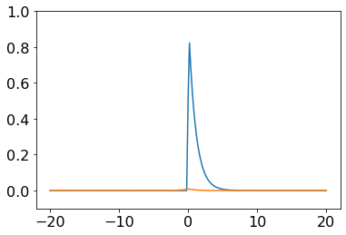
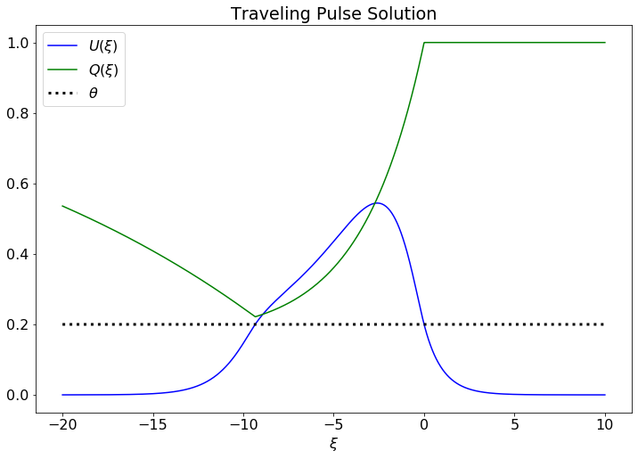
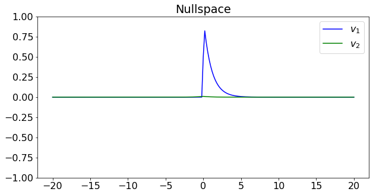

%matplotlib inline
%load_ext autoreload
%autoreload 2
import matplotlib.pyplot as plt
import sympy as sym
from sympy.functions.special.delta_functions import DiracDelta
# Heaviside numerics workaround
sympy_modules = [{'Heaviside': lambda x: np.heaviside(x,0.5)}, 'numpy']
from functools import reduce
import numpy as np
import numpy.linalg as la
# import dill # pickle but better
import pickleTraveling Pulse
import matplotlib
matplotlib.rcParams.update({'font.size': 16})file_name = 'synaptic_depression_symbolics.pickle'
# display_mode = 'display'
display_mode = 'latex'
def my_display(expr):
if display_mode == 'latex':
print(sym.latex(expr))
else:
display(expr)
return None
# a dictionary of variable definitions
if 'sub_dict' not in globals().keys():
sub_dict = {}
def recursive_reduce(expression):
reduced_expression = expression
while any(v in reduced_expression.free_symbols for v in sub_dict.keys()):
reduced_expression = reduced_expression.subs(sub_dict)
return reduced_expression
if 'expr_dict' not in globals().keys():
expr_dict = {}ξ, y = sym.symbols('\\xi y', real=True)
α, β, c, Δ, μ = sym.symbols('\\alpha, \\beta, c, \\Delta \\mu', real=True, positive=True)
Q_right = 1
Q_mid = 1/(1+α*β)*(1 + α*β*sym.exp((1+α*β)/(c*α)*ξ))
Q_left = 1 + α*β/(1+α*β)*(sym.exp(-β*Δ/c) - sym.exp(Δ/(α*c)))*sym.exp(ξ/(α*c))
Q = sym.Piecewise((Q_left, ξ<-Δ), (Q_mid, ξ<0), (Q_right, True))
my_display(sym.Eq(sym.Function('Q')(ξ), Q))
expr_dict['Q_left'] = Q_left
expr_dict['Q_mid'] = Q_mid
expr_dict['Q_right'] = Q_right
expr_dict['Q'] = QQ{\left(\xi \right)} = \begin{cases} \frac{\alpha \beta \left(- e^{\frac{\Delta}{\alpha c}} + e^{- \frac{\Delta \beta}{c}}\right) e^{\frac{\xi}{\alpha c}}}{\alpha \beta + 1} + 1 & \text{for}\: \Delta < - \xi \\\frac{\alpha \beta e^{\frac{\xi \left(\alpha \beta + 1\right)}{\alpha c}} + 1}{\alpha \beta + 1} & \text{for}\: \xi < 0 \\1 & \text{otherwise} \end{cases}B1, B2, B3, B4, B5, B6, B7, B8, B9, B10, B11, B12, B13 = sym.symbols([f'B_{i}' for i in range(1, 14)])
r1, r2 = sym.symbols('r_1 r_2')
assumptions = []
sub_dict[r1] = (1+α*β)/(c*α)
sub_dict[B1] = 1/(1+α*β)
sub_dict[B2] = α*β/(1+α*β)
B3_integral_result = sym.integrate(sym.Rational(1,2)*sym.exp(-y)*(B1 + B2*sym.exp(r1*y)), (y, -Δ, 0) )
sub_dict[B3] = B3_integral_result.args[0][0]
assumptions += [B3_integral_result.args[0][1]]
B4_integral_result = sym.integrate(sym.Rational(1,2)*sym.exp(y)*(B1 + B2*sym.exp(r1*y)), (y, -Δ, 0) )
sub_dict[B4] = B4_integral_result.args[0][0]
assumptions += [B4_integral_result.args[0][1]]
sub_dict[B5] = (B2/(1+r1))
sub_dict[B6] = (-B1*sym.exp(-Δ) - B2/(1+r1)*sym.exp(-(1+r1)*Δ))
sub_dict[B7] = (-B2/(r1-1))
sub_dict[B8] = (-B1 + B2/(r1-1))
sub_dict[B9] = (B6/2/(1+c*μ))
sub_dict[B10] = (B8/2/(1-c*μ))
sub_dict[B11] = ((B5+B7)/2/(1-r1*c*μ))
sub_dict[B12] = (B3/(1-c*μ))
sub_dict[B13] = (B4/(1+c*μ))
for key, val in sub_dict.items():
sub_dict[key] = val.simplify()
print('Assuming')
for assumption in assumptions:
my_display(assumption.subs(sub_dict))
print('with')
for key, val in sub_dict.items():
my_display(sym.Eq(key, val))
AL, AM = sym.symbols('A_L A_M')
U_left = B12*sym.exp(ξ) + AL*sym.exp(ξ/(c*μ))
U_right = B13*sym.exp(-ξ)
U_mid = B1 + B9*sym.exp(-ξ) + B10*sym.exp(ξ) + B11*sym.exp(r1*ξ) + AM*sym.exp(ξ/(c*μ))
U = sym.Piecewise((U_left, ξ<-Δ),
(U_mid, ξ<0),
(U_right, True))
expr_dict['U'] = U
expr_dict['U_left'] = U_left
expr_dict['U_mid'] = U_mid
expr_dict['U_right'] = U_right
AM_subs = sym.solve( (U_right - U_mid).subs(ξ,0), AM)[0]
sub_dict[AM] = AM_subs.subs(sub_dict)
my_display(sym.Eq(AM, AM_subs))
AL_subs = sym.solve( (U_left - U_mid).subs(ξ,-Δ), AL)[0]
sub_dict[AL] = AL_subs.subs(sub_dict)
my_display(sym.Eq(AL, AL_subs))
my_display(sym.Eq(sym.Function('U')(ξ), U))Assuming
\frac{\alpha \beta + 1}{\alpha c} \neq 1
\text{True}
with
r_{1} = \frac{\alpha \beta + 1}{\alpha c}
B_{1} = \frac{1}{\alpha \beta + 1}
B_{2} = \frac{\alpha \beta}{\alpha \beta + 1}
B_{3} = \frac{\left(- B_{2} e^{\Delta} + \left(B_{1} r_{1} e^{\Delta} - B_{1} r_{1} - B_{1} e^{\Delta} + B_{1} + B_{2}\right) e^{\Delta r_{1}}\right) e^{- \Delta r_{1}}}{2 \left(r_{1} - 1\right)}
B_{4} = \frac{\left(- B_{1} \left(r_{1} + 1\right) e^{\Delta r_{1}} - B_{2} + \left(B_{1} r_{1} + B_{1} + B_{2}\right) e^{\Delta \left(r_{1} + 1\right)}\right) e^{- \Delta \left(r_{1} + 1\right)}}{2 \left(r_{1} + 1\right)}
B_{5} = \frac{B_{2}}{r_{1} + 1}
B_{6} = - \frac{\left(B_{1} \left(r_{1} + 1\right) e^{\Delta \left(r_{1} + 1\right)} + B_{2} e^{\Delta}\right) e^{- \Delta \left(r_{1} + 2\right)}}{r_{1} + 1}
B_{7} = - \frac{B_{2}}{r_{1} - 1}
B_{8} = \frac{- B_{1} \left(r_{1} - 1\right) + B_{2}}{r_{1} - 1}
B_{9} = \frac{B_{6}}{2 \left(\mu c + 1\right)}
B_{10} = - \frac{B_{8}}{2 \mu c - 2}
B_{11} = - \frac{B_{5} + B_{7}}{2 \mu c r_{1} - 2}
B_{12} = - \frac{B_{3}}{\mu c - 1}
B_{13} = \frac{B_{4}}{\mu c + 1}
A_{M} = - B_{1} - B_{10} - B_{11} + B_{13} - B_{9}
A_{L} = A_{M} + B_{1} e^{\frac{\Delta}{\mu c}} + B_{10} e^{- \Delta + \frac{\Delta}{\mu c}} + B_{11} e^{- \Delta r_{1} + \frac{\Delta}{\mu c}} - B_{12} e^{- \Delta + \frac{\Delta}{\mu c}} + B_{9} e^{\Delta + \frac{\Delta}{\mu c}}
U{\left(\xi \right)} = \begin{cases} A_{L} e^{\frac{\xi}{\mu c}} + B_{12} e^{\xi} & \text{for}\: \Delta < - \xi \\A_{M} e^{\frac{\xi}{\mu c}} + B_{1} + B_{10} e^{\xi} + B_{11} e^{\xi r_{1}} + B_{9} e^{- \xi} & \text{for}\: \xi < 0 \\B_{13} e^{- \xi} & \text{otherwise} \end{cases}θ = sym.symbols('\\theta', positive=True)
eq1 = U_mid.subs(ξ, 0) - θ
my_display(sym.Eq(0, eq1))
eq2 = U_mid.subs(ξ, -Δ) - θ
my_display(sym.Eq(0, eq2))
expr_dict['speed_width_conditions'] = (eq1, eq2)0 = A_{M} + B_{1} + B_{10} + B_{11} + B_{9} - \theta
0 = A_{M} e^{- \frac{\Delta}{\mu c}} + B_{1} + B_{10} e^{- \Delta} + B_{11} e^{- \Delta r_{1}} + B_{9} e^{\Delta} - \thetamy_display(sym.Eq(0, recursive_reduce(eq1).simplify()))
my_display(sym.Eq(0, recursive_reduce(eq2).simplify()))\(\displaystyle 0 = \frac{\left(- \alpha^{2} \beta c - 2 \theta \left(\alpha \beta + 1\right) \left(\mu c + 1\right) \left(\alpha \beta + \alpha c + 1\right) e^{\frac{\Delta \left(\alpha \beta + \alpha c + 1\right)}{\alpha c}} - \left(\alpha \beta + \alpha c + 1\right) e^{\frac{\Delta \left(\alpha \beta + 1\right)}{\alpha c}} + \left(\alpha \beta + \alpha c \left(\alpha \beta + 1\right) + 1\right) e^{\frac{\Delta \left(\alpha \beta + \alpha c + 1\right)}{\alpha c}}\right) e^{- \frac{\Delta \left(\alpha \beta + \alpha c + 1\right)}{\alpha c}}}{2 \left(\alpha \beta + 1\right) \left(\mu c + 1\right) \left(\alpha \beta + \alpha c + 1\right)}\)
\(\displaystyle 0 = - \theta - \left(\frac{1}{\alpha \beta + 1} + \frac{\frac{\alpha \beta}{\left(1 + \frac{\alpha \beta + 1}{\alpha c}\right) \left(\alpha \beta + 1\right)} + \frac{\alpha \beta}{\left(1 - \frac{\alpha \beta + 1}{\alpha c}\right) \left(\alpha \beta + 1\right)}}{2 - \frac{2 \mu \left(\alpha \beta + 1\right)}{\alpha}} - \frac{\left(\frac{\alpha \beta e^{\Delta}}{\alpha \beta + 1} + \frac{\left(1 + \frac{\alpha \beta + 1}{\alpha c}\right) e^{\Delta \left(1 + \frac{\alpha \beta + 1}{\alpha c}\right)}}{\alpha \beta + 1}\right) e^{- \Delta \left(2 + \frac{\alpha \beta + 1}{\alpha c}\right)}}{2 \left(1 + \frac{\alpha \beta + 1}{\alpha c}\right) \left(\mu c + 1\right)} + \frac{\left(\frac{\alpha \beta}{\alpha \beta + 1} + \frac{\left(1 + \frac{\alpha \beta + 1}{\alpha c}\right) e^{\frac{\Delta \left(\alpha \beta + 1\right)}{\alpha c}}}{\alpha \beta + 1} - \left(\frac{\alpha \beta}{\alpha \beta + 1} + \frac{1}{\alpha \beta + 1} + \frac{1}{\alpha c}\right) e^{\Delta \left(1 + \frac{\alpha \beta + 1}{\alpha c}\right)}\right) e^{- \Delta \left(1 + \frac{\alpha \beta + 1}{\alpha c}\right)}}{2 \left(1 + \frac{\alpha \beta + 1}{\alpha c}\right) \left(\mu c + 1\right)} + \frac{\frac{\alpha \beta}{\alpha \beta + 1} + \frac{1 - \frac{\alpha \beta + 1}{\alpha c}}{\alpha \beta + 1}}{\left(1 - \frac{\alpha \beta + 1}{\alpha c}\right) \left(2 \mu c - 2\right)}\right) e^{- \frac{\Delta}{\mu c}} + \frac{1}{\alpha \beta + 1} + \frac{\left(\frac{\alpha \beta}{\left(1 + \frac{\alpha \beta + 1}{\alpha c}\right) \left(\alpha \beta + 1\right)} + \frac{\alpha \beta}{\left(1 - \frac{\alpha \beta + 1}{\alpha c}\right) \left(\alpha \beta + 1\right)}\right) e^{- \frac{\Delta \left(\alpha \beta + 1\right)}{\alpha c}}}{2 - \frac{2 \mu \left(\alpha \beta + 1\right)}{\alpha}} - \frac{\left(\frac{\alpha \beta e^{\Delta}}{\alpha \beta + 1} + \frac{\left(1 + \frac{\alpha \beta + 1}{\alpha c}\right) e^{\Delta \left(1 + \frac{\alpha \beta + 1}{\alpha c}\right)}}{\alpha \beta + 1}\right) e^{\Delta} e^{- \Delta \left(2 + \frac{\alpha \beta + 1}{\alpha c}\right)}}{2 \left(1 + \frac{\alpha \beta + 1}{\alpha c}\right) \left(\mu c + 1\right)} + \frac{\left(\frac{\alpha \beta}{\alpha \beta + 1} + \frac{1 - \frac{\alpha \beta + 1}{\alpha c}}{\alpha \beta + 1}\right) e^{- \Delta}}{\left(1 - \frac{\alpha \beta + 1}{\alpha c}\right) \left(2 \mu c - 2\right)}\)
Numerics
Adjoint Nullspace
We seek \(v_1, v_2 \in L^2(\mathbb{R})\) such that \[ \begin{align*} -c \mu v_1' &= v_1 - f'(U)Q \bigg[ \int_{\mathbb{R}} w(y,\xi) v_1(y) \ dy - \alpha \beta v_2\bigg] \\ -c \alpha v_2' &= v_2 - f(U)\bigg[ \int_{\mathbb{R}} w(y, \xi) v_1(y) \ dy - \alpha \beta v_2 \bigg] \end{align*} \] Rearranging, we have \[ \begin{align*} v_1' + \frac{1}{c\mu} v_1 &= \frac{1}{c\mu}f'(U)Q \bigg[ \int_{\mathbb{R}} w(y,\xi) v_1(y) \ dy - \alpha \beta v_2\bigg] \\ v_2' + \frac{1}{c\alpha}v_2 &= \frac{1}{c\alpha}f(U)\bigg[ \int_{\mathbb{R}} w(y, \xi) v_1(y) \ dy - \alpha \beta v_2 \bigg] \end{align*} \] Choosing \(f(\cdot) = H(\cdot - \theta)\) and \(w(x,y) = \tfrac{1}{2} e^{-|x - y|}\) we have \[ \begin{align*} v_1' + \frac{1}{c\mu} v_1 &= \frac{1}{c\mu}\bigg( \frac{\delta(\xi)}{|U'(0)|} + \frac{\delta(\xi + \Delta)}{|U'(-\Delta)|} \bigg)Q \bigg[ \int_{\mathbb{R}} \tfrac{1}{2} e^{-|y - \xi|} v_1(y) \ dy - \alpha \beta v_2\bigg] \\ \big[ e^{\frac{1}{c\mu} \xi} v_1 \big]' &= \frac{1}{c\mu}\bigg( \frac{\delta(\xi)}{|U'(0)|} + \frac{\delta(\xi + \Delta)}{|U'(-\Delta)|} \bigg)Q e^{\frac{1}{c\mu} \xi} \bigg[ \int_{\mathbb{R}} \tfrac{1}{2} e^{-|y - \xi|} v_1(y) \ dy - \alpha \beta v_2\bigg] \\ e^{\frac{1}{c\mu} \xi} v_1 &= A_{-\infty} + \frac{1}{c\mu}\frac{Q(0)}{|U'(0)|} \bigg[ \int_{\mathbb{R}} \tfrac{1}{2}e^{-|y|} v_1(y) \ dy - \alpha \beta v_2(0) \bigg] H(\xi) + \frac{1}{c\mu} e^{-\frac{\Delta}{c\mu}} \frac{Q(-\Delta)}{|U'(-\Delta)|} \bigg[ \int_{\mathbb{R}} \tfrac{1}{2}e^{-|y + \Delta|} v_1(y) \ dy - \alpha \beta v_2(-\Delta) \bigg] H(\xi + \Delta) \\ v_1 &= A_{-\infty}e^{-\frac{1}{c\mu} \xi} + \underbrace{\frac{1}{c\mu}\frac{Q(0)}{|U'(0)|} \bigg[ \int_{\mathbb{R}} \tfrac{1}{2}e^{-|y|} v_1(y) \ dy - \alpha \beta v_2(0) \bigg]}_{A_{0}} e^{-\frac{1}{c\mu} \xi} H(\xi) + \underbrace{\frac{1}{c\mu} e^{-\frac{\Delta}{c\mu}} \frac{Q(-\Delta)}{|U'(-\Delta)|} \bigg[ \int_{\mathbb{R}} \tfrac{1}{2}e^{-|y + \Delta|} v_1(y) \ dy - \alpha \beta v_2(-\Delta) \bigg]}_{A_{-\Delta}} e^{-\frac{1}{c\mu} \xi} H(\xi + \Delta) \\ v_1(\xi) &= A_{-\infty} e^{-\frac{1}{c\mu} \xi} + A_{-\Delta} e^{-\frac{1}{c\mu} \xi} H(\xi + \Delta) + A_{0} e^{-\frac{1}{c\mu} \xi}H(\xi) \end{align*} \] For \(v_1\) to be bounded, we need \(0 = \lim\limits_{\xi \to -\infty} v_1(\xi) \implies A_{-\infty} = 0\). This gives two consistency conditions \[ \begin{align*} A_{-\Delta} &= \underbrace{\frac{1}{c\mu} e^{-\frac{\Delta}{c\mu}} \frac{Q(-\Delta)}{|U'(-\Delta)|}}_{D_{-\Delta}} \bigg[ \int \tfrac{1}{2}e^{-|y + \Delta|} \bigg( A_{-\Delta} e^{-\frac{1}{c\mu} y} H(y + \Delta) + A_{0} e^{-\frac{1}{c\mu} y}H(y) \bigg) \ dy - \alpha \beta v_2(-\Delta) \bigg] \\ A_{0} &= \underbrace{\frac{1}{c\mu}\frac{Q(0)}{|U'(0)|}}_{D_0} \bigg[ \int \tfrac{1}{2}e^{-|y|} \bigg( A_{-\Delta} e^{-\frac{1}{c\mu} y} H(y + \Delta) + A_{0} e^{-\frac{1}{c\mu} y}H(y) \bigg) \ dy - \alpha \beta v_2(0) \bigg] \end{align*} \]
Am, A0, Dm, D0 = sym.symbols('A_{-\\Delta} A_0 D_{-\\Delta} D_0', real=True)
v1 = sym.Function('v_1')
v2 = sym.Function('v_2')
sub_dict[D0] = 1/c/μ * Q_mid.subs(ξ,0)/-U_mid.diff(ξ).subs(ξ, 0)
sub_dict[Dm] = 1/c/μ *sym.exp(-Δ/c/μ) * Q_mid.subs(ξ,-Δ)/U_mid.diff(ξ).subs(ξ, -Δ)
expr_dict['v1'] = sym.exp(-1/c/μ *ξ) * (Am*sym.Heaviside(ξ+Δ) + A0*sym.Heaviside(ξ))
argm = sym.exp(-sym.Abs(y+Δ))/2 * expr_dict['v1'].subs(ξ, y)
arg0 = sym.exp(-sym.Abs(y))/2 * expr_dict['v1'].subs(ξ, y)
expr_m = Dm * ( sym.integrate( argm, (y, -sym.oo, sym.oo)) - α*β*v2(-Δ) ) - Am
integral_expression = sym.integrate( arg0, (y, -sym.oo, sym.oo))
#print('assume')
#display(integral_expression.args[0].args[1])
expr_0 = D0 * ( integral_expression.args[0].args[0] - α*β*v2(0) ) - A0
expr_m = expr_m.expand().collect(Am).collect(A0)
expr_0 = expr_0.expand().collect(Am).collect(A0)
my_display(sym.Eq(0, expr_m))
my_display(sym.Eq(0, expr_0))0 = \frac{A_{0} D_{-\Delta} \mu c e^{\frac{\Delta}{\mu c}}}{2 \mu c e^{\Delta} e^{\frac{\Delta}{\mu c}} + 2 e^{\Delta} e^{\frac{\Delta}{\mu c}}} + A_{-\Delta} \left(\frac{D_{-\Delta} \mu c e^{\frac{\Delta}{\mu c}}}{2 \mu c + 2} - 1\right) - D_{-\Delta} \alpha \beta \operatorname{v_{2}}{\left(- \Delta \right)}
0 = A_{0} \left(\frac{D_{0} \mu c}{2 \mu c + 2} - 1\right) + A_{-\Delta} \left(- \frac{D_{0} \mu c e^{\frac{\Delta}{\mu c}}}{2 \mu c e^{\Delta} - 2 e^{\Delta}} + \frac{D_{0} \mu c}{2 \mu c + 2} + \frac{D_{0} \mu c}{2 \mu c - 2}\right) - D_{0} \alpha \beta \operatorname{v_{2}}{\left(0 \right)}Also, \[\begin{align*} v_2' + \frac{1}{c\alpha}v_2 &= \frac{1}{c\alpha}f(U)\bigg[ \int_{\mathbb{R}} w(y, \xi) v_1(y) \ dy - \alpha \beta v_2 \bigg] \end{align*}\] and we have \[\begin{align*} v_2' + \frac{1}{c\alpha}v_2 &= 0, &\text{ on } \xi & \not\in (-\Delta, 0) \\ c\alpha v_2' + (1+\alpha\beta)v_2 &= \int_{\mathbb{R}} w(y, \xi) v_1(y) \ dy, & \text{ on } \xi & \in (-\Delta, 0) \end{align*}\]
integral_expression = Am/2*( sym.integrate( sym.exp(y-ξ)*sym.exp(-1/c/μ*y), (y, -Δ, ξ) ).args[0].args[0] +\
sym.integrate( sym.exp(ξ-y)*sym.exp(-1/c/μ*y), (y, ξ, sym.oo) ) ).expand().collect(sym.exp(ξ)).collect(sym.exp(ξ/μ/c)) + \
A0/2 * sym.integrate(sym.exp(ξ-y) * sym.exp(-1/c/μ*y), (y, 0, sym.oo))
integral_expression = integral_expression.expand().collect(sym.exp(ξ)).collect(sym.exp(-ξ/μ/c))
terms = [sym.exp(ξ), sym.exp(-ξ), sym.exp(-ξ/μ/c)]
coeffs = [integral_expression.coeff(term) for term in terms]
coeffs = [(coeff/my_A).simplify() for coeff, my_A in zip(coeffs, [A0, Am, Am])]
terms = [term*my_A for term, my_A in zip(terms, [A0, Am, Am])]
coeffs_sub = [sym.symbols(f'E_{i}', real=True) for i in range(len(terms))]
# coeffs_sub_dict = {k:v for k, v in zip(coeffs_sub, coeffs)}
sub_dict = {**sub_dict, **{k:v for k, v in zip(coeffs_sub, coeffs)} }
integral_expression_sub = sum(term*coeff for term, coeff in zip(terms, coeffs_sub))
assert 0 == (integral_expression - sum(term*coeff for term, coeff in zip(terms, coeffs))).simplify()
assert 0 == (integral_expression - recursive_reduce(integral_expression_sub)).simplify()
print('The rhs is then')
my_display(integral_expression_sub)
print('for')
for k, v in zip(coeffs_sub, coeffs):
my_display(sym.Eq(k, v))The rhs is then
A_{0} E_{0} e^{\xi} + A_{-\Delta} E_{1} e^{- \xi} + A_{-\Delta} E_{2} e^{- \frac{\xi}{\mu c}}
for
E_{0} = \frac{\mu c}{2 \left(\mu c + 1\right)}
E_{1} = - \frac{\mu c e^{- \Delta + \frac{\Delta}{\mu c}}}{2 \mu c - 2}
E_{2} = \frac{\mu^{2} c^{2}}{\mu^{2} c^{2} - 1}v2_mid = sym.dsolve( c*α*v2(ξ).diff(ξ) + (1+α*β)*v2(ξ) - integral_expression_sub, func=v2(ξ),
hint='nth_linear_constant_coeff_undetermined_coefficients').args[1]
C1 = sym.symbols('C1')my_display(v2_mid)\frac{A_{0} E_{0} e^{\xi}}{\alpha \beta + \alpha c + 1} - \frac{A_{-\Delta} E_{1} e^{- \xi}}{- \alpha \beta + \alpha c - 1} + \frac{A_{-\Delta} E_{2} \mu e^{- \frac{\xi}{\mu c}}}{\alpha \beta \mu - \alpha + \mu} + C_{1} e^{\frac{\xi \left(- \beta - \frac{1}{\alpha}\right)}{c}}expr_v2 = v2_mid.subs(ξ, -Δ).expand().collect(A0).collect(Am).collect(C1)
expr_m = expr_m.subs(v2(-Δ), 0)
expr_0 = expr_0.subs(v2(0), v2_mid.subs(ξ,0)).expand().collect(A0).collect(Am).collect(C1)
conditions = (expr_m, expr_0, expr_v2)
for condition in conditions:
my_display(sym.Eq(0, condition))
expr_dict['adjoint_nullspace_conditions'] = conditions0 = \frac{A_{0} D_{-\Delta} \mu c e^{\frac{\Delta}{\mu c}}}{2 \mu c e^{\Delta} e^{\frac{\Delta}{\mu c}} + 2 e^{\Delta} e^{\frac{\Delta}{\mu c}}} + A_{-\Delta} \left(\frac{D_{-\Delta} \mu c e^{\frac{\Delta}{\mu c}}}{2 \mu c + 2} - 1\right)
0 = A_{0} \left(- \frac{D_{0} E_{0} \alpha \beta}{\alpha \beta + \alpha c + 1} + \frac{D_{0} \mu c}{2 \mu c + 2} - 1\right) + A_{-\Delta} \left(\frac{D_{0} E_{1} \alpha \beta}{- \alpha \beta + \alpha c - 1} - \frac{D_{0} E_{2} \alpha \beta \mu}{\alpha \beta \mu - \alpha + \mu} - \frac{D_{0} \mu c e^{\frac{\Delta}{\mu c}}}{2 \mu c e^{\Delta} - 2 e^{\Delta}} + \frac{D_{0} \mu c}{2 \mu c + 2} + \frac{D_{0} \mu c}{2 \mu c - 2}\right) - C_{1} D_{0} \alpha \beta
0 = \frac{A_{0} E_{0}}{\alpha \beta e^{\Delta} + \alpha c e^{\Delta} + e^{\Delta}} + A_{-\Delta} \left(- \frac{E_{1} e^{\Delta}}{- \alpha \beta + \alpha c - 1} + \frac{E_{2} \mu e^{\frac{\Delta}{\mu c}}}{\alpha \beta \mu - \alpha + \mu}\right) + C_{1} e^{\frac{\Delta}{\alpha c}} e^{\frac{\Delta \beta}{c}}expr_dict['v2'] = sym.Piecewise(
(0, ξ< - Δ),
(v2_mid, ξ<0),
(v2_mid.subs(ξ, 0)*sym.exp(-1/c/μ * ξ), True)
)my_display(expr_dict['v2'])\begin{cases} 0 & \text{for}\: \Delta < - \xi \\\frac{A_{0} E_{0} e^{\xi}}{\alpha \beta + \alpha c + 1} - \frac{A_{-\Delta} E_{1} e^{- \xi}}{- \alpha \beta + \alpha c - 1} + \frac{A_{-\Delta} E_{2} \mu e^{- \frac{\xi}{\mu c}}}{\alpha \beta \mu - \alpha + \mu} + C_{1} e^{\frac{\xi \left(- \beta - \frac{1}{\alpha}\right)}{c}} & \text{for}\: \xi < 0 \\\left(\frac{A_{0} E_{0}}{\alpha \beta + \alpha c + 1} - \frac{A_{-\Delta} E_{1}}{- \alpha \beta + \alpha c - 1} + \frac{A_{-\Delta} E_{2} \mu}{\alpha \beta \mu - \alpha + \mu} + C_{1}\right) e^{- \frac{\xi}{\mu c}} & \text{otherwise} \end{cases}get numerical parameters
import helper_symbolics
params = {
'theta': 0.2,
'alpha': 20,
'beta': .25,
'mu': 1
}
precision = 100
numeric_subs = helper_symbolics.get_speed_and_width(params, precision=precision)
# c = float([v for k, v in numerical_params.items() if str(k) == 'c'][0])
# pulse_width = float([v for k, v in numerical_params.items() if str(k) == '\\Delta'][0])
for k, v in numeric_subs.items():
print(f'{k} = {v}')
# U_numeric, Q_numeric, *_ = helper_symbolics.get_traveling_pulse(numerical_params, precision=precision, validate=False)\theta = 0.20000000000000000000000000000
\alpha = 20.000000000000000000000000000
\beta = 0.25000000000000000000000000000
\mu = 1.0000000000000000000000000000
c = 1.030045435865679633038580345828761970112975895773849122249103539507323877180428183325981484882257842
\Delta = 9.342632848278734582348146110265447239302673294271547765964725591050019234312324056202624227085276521numerical_conditions = []
for condition in conditions:
condition = recursive_reduce(condition).evalf(precision, subs=numeric_subs)
#print(condition.free_symbols)
display(sym.Eq(0, condition))
print()
numerical_conditions.append(condition)\(\displaystyle 0 = 0.000000007258392580672051770556812345989301245290184103747722438113897057643816583319894234489587078070128743 A_{0} - 0.2798943697154407293602974780311702204388083502965224877915423907057883472536506375784921485752654356 A_{-\Delta}\)
\(\displaystyle 0 = 0.00002256366768391556194149647770244686089860535465357733756112308308724105452730807833803563507258265327 A_{0} + 29.53936874874861670909134119795351046221431480864659467935516564429418368036734258052000891641018677 A_{-\Delta} - 24.27077401589502239418952037992012161717854845527239171162230343769918280642384805277039180397153573 C_{1}\)
\(\displaystyle 0 = 0.0000008355458044680727405609421260836843767836801988246192921442383633156143859914378928170301006017330077 A_{0} - 595.4810469301366728439836012551744335144087370266484077901298081848274160458585391520596286684399211 A_{-\Delta} + 15.19604454810015047867319336650438168607406900127447396846477878845034695760856572725156004353798691 C_{1}\)
my_vars = [A0, Am, C1]
M = sym.Matrix([
[condition.coeff(v) for v in my_vars] for condition in numerical_conditions
])M\(\displaystyle \left[\begin{matrix}0.000000007258392580672051770556812345989301245290184103747722438113897057643816583319894234489587078070128743 & -0.2798943697154407293602974780311702204388083502965224877915423907057883472536506375784921485752654356 & 0\\0.00002256366768391556194149647770244686089860535465357733756112308308724105452730807833803563507258265327 & 29.53936874874861670909134119795351046221431480864659467935516564429418368036734258052000891641018677 & -24.27077401589502239418952037992012161717854845527239171162230343769918280642384805277039180397153573\\0.0000008355458044680727405609421260836843767836801988246192921442383633156143859914378928170301006017330077 & -595.4810469301366728439836012551744335144087370266484077901298081848274160458585391520596286684399211 & 15.19604454810015047867319336650438168607406900127447396846477878845034695760856572725156004353798691\end{matrix}\right]\)
M.det()\(\displaystyle -0.000000000000000000000000000003813829961580404316756884375214968495069494200196683965441082701523107364293694859652781415120432303\)
M_ndarray = np.array(M, dtype=np.float)
print(f'cond = {la.cond(M_ndarray):.5g}')
eigen_vals, eigen_vect_mat = la.eig(M_ndarray)
eigen_val, eigen_vect = sorted(zip(eigen_vals, eigen_vect_mat.T), key=lambda tup: abs(tup[0]))[0]
print(eigen_vals)
print(eigen_vect)
display(sym.Eq(sym.symbols('\\lambda'), eigen_val))
for var, sub in zip(my_vars, eigen_vect.real):
numeric_subs[var] = sub
print(eigen_vect_mat)cond = inf
[ 0. 142.80116816 -98.06575486]
[1.00000000e+00 2.59326138e-08 9.61226070e-07]\(\displaystyle \lambda = 0.0\)
[[ 1.00000000e+00 4.10689250e-04 5.33304553e-04]
[ 2.59326138e-08 -2.09532277e-01 1.86852324e-01]
[ 9.61226070e-07 9.77801645e-01 9.82387869e-01]]numeric_subs[Am]2.593261375013748e-08np.round(eigen_vect_mat, 4)array([[ 1.000e+00, 4.000e-04, 5.000e-04],
[ 0.000e+00, -2.095e-01, 1.869e-01],
[ 0.000e+00, 9.778e-01, 9.824e-01]])expr_dict['v1'].evalf(subs=numeric_subs)\(\displaystyle \left(0.999999999999538 \theta\left(\xi\right) + 2.59326137501375 \cdot 10^{-8} \theta\left(\xi + 9.342632848278734582348146110265447239302673294271547765964725591050019234312324056202624227085276521\right)\right) e^{- 0.9708309606358008957675808151979732710609567124303613072534000631302004749911450258222324782819382615 \xi}\)
test_subs = {**numeric_subs, A0: A0, Am: Am, C1:C1}recursive_reduce(v2_mid).subs(test_subs).evalf(5)\(\displaystyle 0.0095373 A_{0} e^{\xi} + 0.89396 A_{-\Delta} e^{- \xi} - 1.2425 A_{-\Delta} e^{- 0.9708309606358008957675808151979732710609567124303613072534000631302004749911450258222324782819382615 \xi} + C_{1} e^{- 0.2912492881907402687302742445595451514363717622037873412987573405915948520928810276679107226603692338 \xi}\)
eigen_vect.realarray([1.00000000e+00, 2.59326138e-08, 9.61226070e-07])Plot nullspace basis
recursive_reduce(expr_dict['v1']).evalf(precision, subs=numeric_subs)\(\displaystyle \left(0.999999999999537703132546084816567599773406982421875 \theta\left(\xi\right) + 0.000000025932613750137480530374021656624117238010285291238687932491302490234375 \theta\left(\xi + 9.342632848278734582348146110265447239302673294271547765964725591050019234312324056202624227085276521\right)\right) e^{- 0.9708309606358008957675808151979732710609567124303613072534000631302004749911450258222324782819382615 \xi}\)
v1_numeric = sym.lambdify(ξ, recursive_reduce(expr_dict['v1']).evalf(precision, subs=numeric_subs), modules=sympy_modules)
v2_numeric = sym.lambdify(ξ, recursive_reduce(expr_dict['v2']).evalf(precision, subs=numeric_subs), modules=sympy_modules)zs = np.linspace(-20, 20, 201)
plt.plot(zs, v1_numeric(zs))
plt.plot(zs, v2_numeric(zs))
plt.ylim(-.1, 1)
Save Expressions
expr_dict['sub_dict'] = sub_dict
with open(file_name, 'wb') as f:
pickle.dump(expr_dict, f)Test Saved Expressions
import helper_symbolics
params = {
'theta': 0.2,
'alpha': 20,
'beta': .25,
'mu': 1
}
precision = 15
U_numeric, Q_numeric, *_ = helper_symbolics.get_traveling_pulse(params, precision=precision)xs = np.linspace(-20,10, 2001)
plt.figure(figsize=(12,8))
plt.plot(xs, U_numeric(xs), 'b-', label='$U(\\xi)$')
plt.plot(xs, Q_numeric(xs), 'g-', label='$Q(\\xi)$')
plt.plot(xs, float(params['theta']) + 0*xs, 'k:', label='$\\theta$', linewidth=3)
plt.legend()
plt.title('Traveling Pulse Solution')
plt.xlabel('$\\xi$')
# plt.savefig('traveling_pulse.eps')
plt.show()
v1_numeric, v2_numeric = helper_symbolics.get_adjoint_nullspace(params, precision=precision)xs = np.linspace(-20, 20, 201)
plt.figure(figsize=(10, 5))
plt.plot(xs, v1_numeric(xs), 'b-', label='$v_1$')
plt.plot(xs, v2_numeric(xs), 'g-', label='$v_2$')
plt.ylim(-1, 1)
plt.legend()
plt.title('Nullspace')
# plt.savefig('adjoint_nullspace_basis.eps')
plt.show()